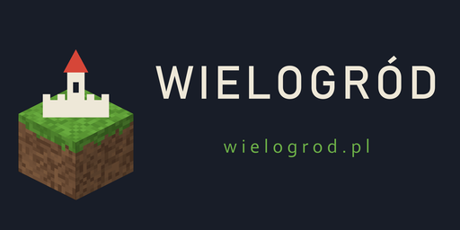

Wielogród
Wielogród
Wielogród
Wielogród

Zwiedzaj miasto, buduj za murami.
Serwer w przygotowaniuPolski serwer Minecraft dla dzieci i rodzin. W środku miasto pełne odwzorowanych zabytków do zwiedzania, a poza murami zwykły survival, w którym można budować własne domy. Bez PvP w mieście, bez handlu za prawdziwe pieniądze, po polsku.
Pomysł jest prosty: jedno miasto, po którym się chodzi jak po muzeum na wolnym powietrzu, i otwarty świat za jego murami, w którym się mieszka.
Odwzorowane budowle z polskich i brytyjskich miast, postawione tak, żeby dały się obejść w kilka minut. Miasto rośnie o kolejne zabytki, a nie o kolejne tryby gry.
Za bramą zaczyna się zwykła gra. Zaznaczasz działkę złotą łopatą i nikt poza Tobą oraz zaproszonymi kolegami nie zniszczy tego, co zbudujesz.
Serwer przyjmuje graczy z wersji Java i z wersji Bedrock, czyli z telefonu, tabletu, konsoli i Windowsa. Wszyscy grają razem, w jednym świecie.
Serwer powstaje z myślą o dzieciach, więc zabezpieczenia były pierwsze, a zabawa druga. Oto co jest wdrożone i działa.
Adres podamy w dniu otwarcia. Poniżej zostawiamy same kroki, żeby dało się przygotować wcześniej.
Komputer z Windowsem, macOS lub Linuksem
Telefon, tablet, konsola, Windows ze Sklepu
19132.Pytania od rodziców i zgłoszenia prosimy kierować na adres poniżej. Odpowiadamy po polsku.
kontakt@wielogrod.pl